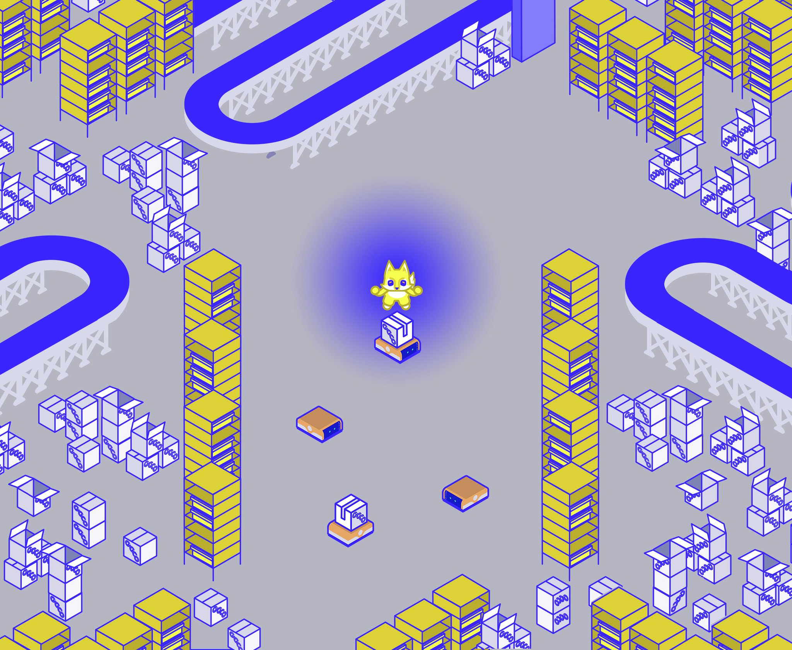
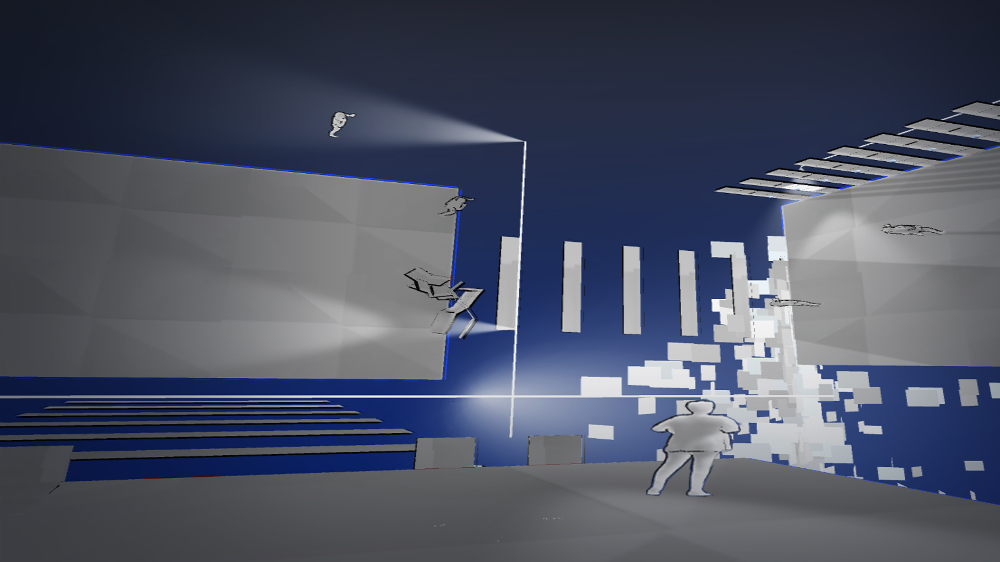
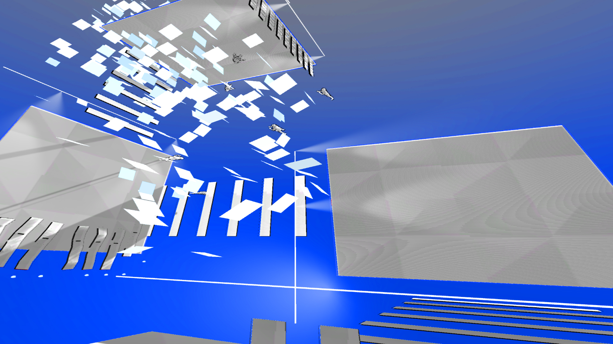
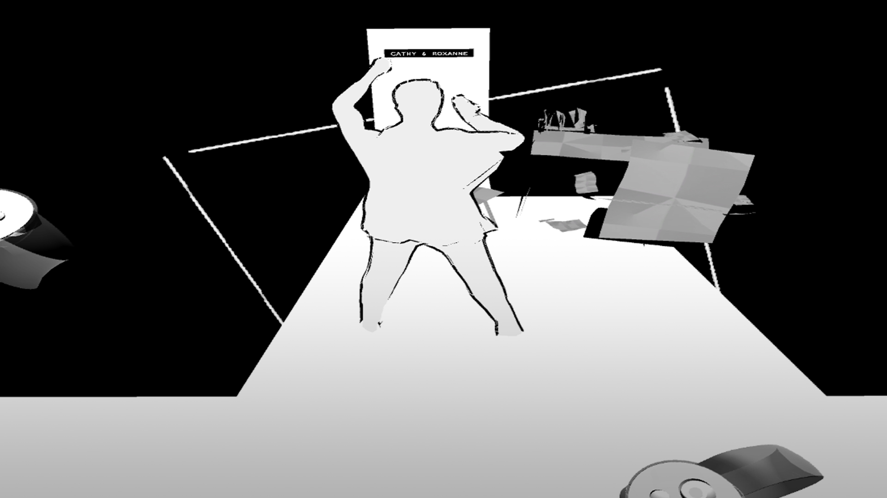
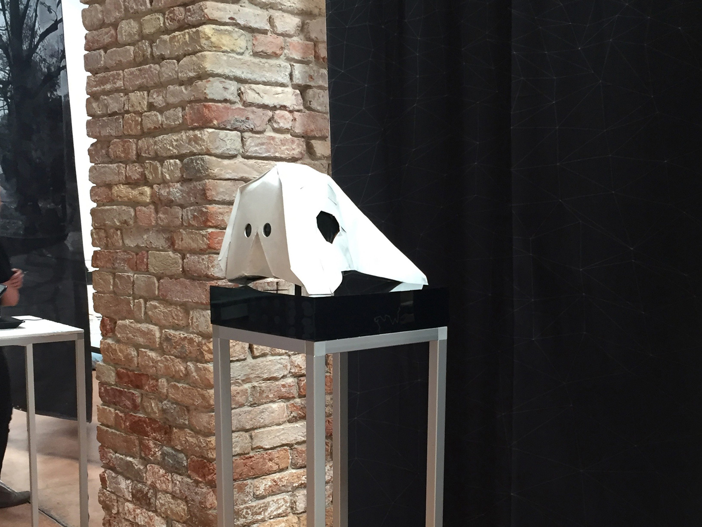
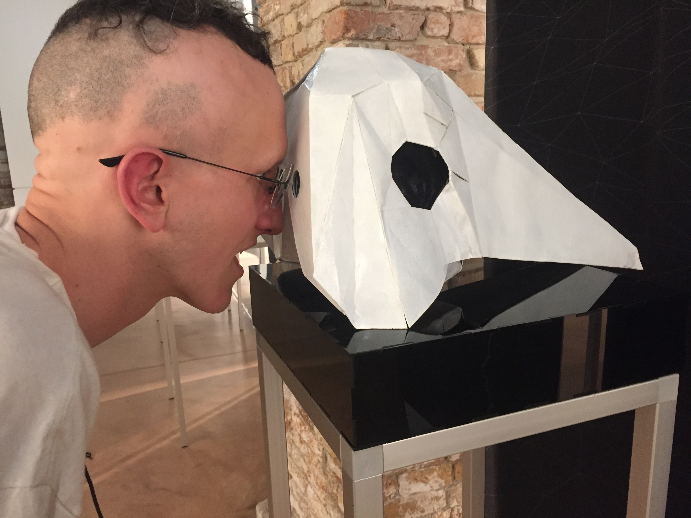
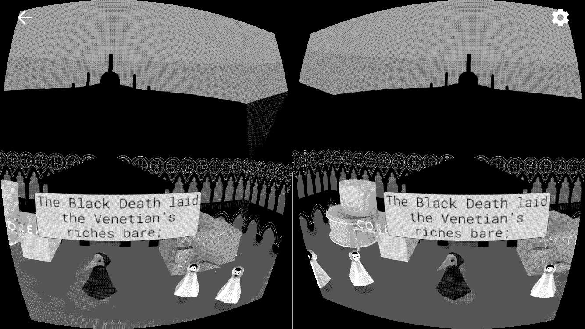
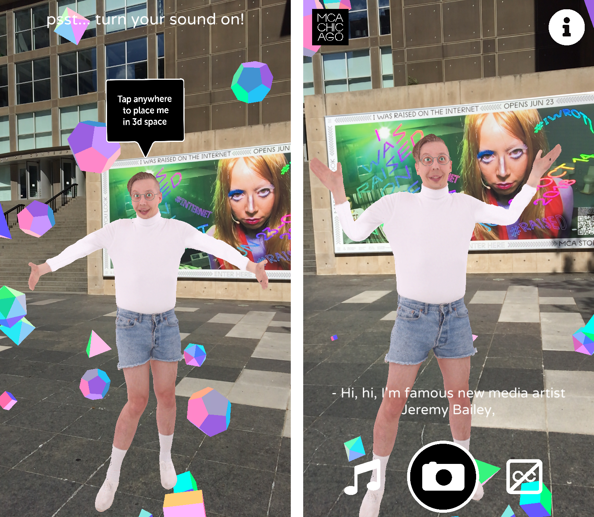
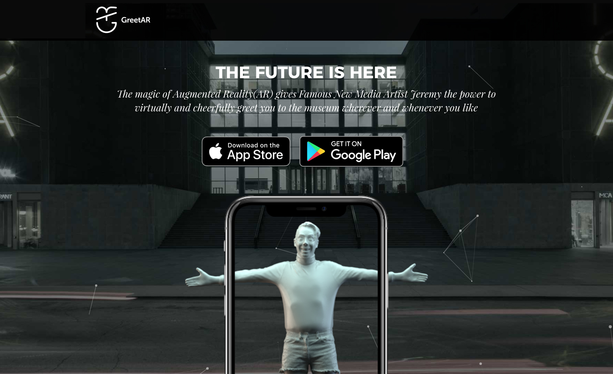

SpekWork is a studio exploring new political narratives through game design. SpekWork is a collaborative effort of Cat Bluemke, Ben McCarthy, and Jonathan Carroll, post-secondary instructors teaching from the intersections of art, labour, and emerging technologies. SpekWork develops games as immersive critical commentary, taking fundamental research in perception to be the foundation of emergent ideology. Their work has been exhibited internationally at venues such as at venues such as Kunsternes Hus (Norway), the 16th Venice Architecture Biennale, and the Museum of Contemporary Art (Chicago).
About
SpekWork is a studio exploring new political narratives through game design. SpekWork is a collaborative effort of Cat Bluemke, Ben McCarthy, and Jonathan Carroll, post-secondary instructors teaching from the intersections of art, labour, and emerging technologies. SpekWork develops games as immersive critical commentary, taking fundamental research in perception to be the foundation of emergent ideology. Their work has been exhibited internationally at venues such as at venues such as Kunsternes Hus (Norway), the 16th Venice Architecture Biennale, and the Museum of Contemporary Art (Chicago).
GIGCO: CO-OP Mode
Browser, 2021Experience GIGCO like never before. Join forces with another player on the factory floor to combine your strength through solidarity. CO-OP MODE brings added perks and win-states to the classic alienation of GIGCO for mobile. In GIGCO: Escape the Gig Economy CO-OP MODE, you return to the factory floor to face the unrelenting pace of independent contract work. Try to keep up with the daily demands while avoiding the impending automation of your job. If you make it through the day, make sure to keep up with your friends, family and coworkers over MyGIG, but be wary, the bosses are listening...
Gameworkers and Guildworkers
Desktop, 2021
Gameworkers and Guildworkers focuses on the Notre Dame Cathedral of Paris and its virtual reconstruction in the video game Assassin's Creed Unity (2014) to examine the working conditions of the builders. Revisiting 13th century statutes of the guild workers who built the original cathedral reveals that contemporary game workers have fewer industry protections than their Medieval counterparts.


CO-OP Copter Scabs
Desktop, 2020
CO-OP Copter Scabs was created over a weekend as part of the Global Game Jam in Regina, Saskatchewan. The game was inspired by the recent labour dispute at the CO-OP Refinery Complex, where union workers from Unifor594 are locked out.


Gigco
iOS, 2018
Looking critically at how technology is shaping the ways we work, Gigco uses gameplay as analogy for civic participation. The rise of the gig/share/app economy has resulted in billions of dollars for company executives, while revealing horror stories of exploited contract workers embedded in the code. Turn on your phone, open the app, and you find yourself in the bowels of GIGCO, a sprawling superpower in online retail. By tapping your phone (the abstracted communication through which transportation, commerce and employment all run through) you race across the screen, moving from one conveyor belt to the next. Your nemesis is the automated shipping robot, ready to take your job at the given chance. If you can't maneuver around the robots and complete your task, the lights dim; the warehouse transitions to fully automated machine-vision.


resourced
Virtual Reality, 2018
resourced is a VR documentary about precarious labour, with a specific focus on frontline workers. Interviews are conducted with street nurses, social workers, sex workers, and activists, people serving those at the margins of society who are often marginalized themselves through associated stigma and poverty.



Phage
Virtual Reality application and custom headset, 2018
Phage is a virtual reality experience and installation in the corollary exhibition to the United States pavilion at the Venice Architecture Biennale 2018. Examining the pavillion theme, Dimensions of Citizenship, Phage looks at the architecture of geopolitics and game design through medieval Venetian architecture and the bubonic plague. Through virtual reality, the audience is taken through a retelling of the medieval superpower's rise and fall, and the virulent nature of the Venice Biennale itself.



MCA GreetAR
Augmented Reality application for iOS and Android, 2018
In collaboration with Famous New Media Artist Jeremy Bailey for the exhibition I Was Raised on the Internet, the SpekWork team developed a cross-platform mobile AR app for the Museum of Contemporary Art of Chicago. "Holographic Jeremy" engaged museum attendants through their phones, addressing the exhibition's theme of mediative technologies.


Ben
Benjamin McCarthy is a sound artist and composer from Toronto, Canada. Otherwise an autodidact, he learned engineering fundamentals from Grammy Award winner Howard Bilerman (Arcade Fire, Wolf Parade). His pop project Pale Eyes has played in venues across North America, and reached the top ten on Canada's college electronic music charts. His sound design work has been performed at Toronto's Factory, Buddies in Badtimes and Daniels Spectrum theatres. His podcast Precariat Content, like much of his work, explores the fraught allegiances and critical power of aesthetic form married to political content. Exploring class, gender, and the artist’s complicity with systems of power, McCarthy works fragments of field recording and found sound into music that slips in and out of generic idiom. He also teaches courses on labour history and the connection between art and labour at George Brown College in Toronto, Canada.
Cat
Cat Bluemke works through video games, performance, and expanded reality to explore the control and conflicts of labour and its relationship with technology. Graduating in 2018 with her MFA in Design for Emerging Technologies from the School of the Art Institute of Chicago, her practice uses technology to reimagine existing social relations and the future of work. Her work has been exhibited internationally at venues such as the the 2018 Venice Architecture Biennale, Kunsternes Hus (Norway), and the Museum of Contemporary Art (Chicago). She lives and works between Chicago, IL and Toronto, Canada.
Jon
Jon is a XR artist and developer who makes games and software. His practice evolved from creating applications to facilitate interaction between performance artists and audiences, to building irreverent interactive experiences for mobile devices and VR headsets. His applications have been shown at the Art Gallery of Ontario and the Museum of Contemporary Art Chicago, and his apps V/Art, Gigco, and GreetAR are available via the App Store. Jonathan teaches game design and XR to artists at the Ontario College of Art & Design and Trinity Square Video in Toronto.
Press Kit
SpekWork Studio, based in Toronto, Canada.
Website: spek.work
Press/Business Contact: studio@spek.work
Social:
Full PressKit!SpekWork is a studio exploring new political narratives through game design. SpekWork is a collaborative effort of Cat Bluemke, Ben McCarthy, and Jonathan Carroll, post-secondary instructors teaching from the intersections of art, labour, and emerging technologies. SpekWork develops games as immersive critical commentary, taking fundamental research in perception to be the foundation of emergent ideology. Their work has been exhibited internationally at venues such as at venues such as Kunsternes Hus (Norway), the 16th Venice Architecture Biennale, and the Museum of Contemporary Art (Chicago).
SpekWork emerged from the collaborative team of Cat Bluemke, Ben McCarthy, and Jonathan Carroll. They had worked together in the Toronto-based new media performance collective Tough Guy Mountain, which Jonathan had co-founded in 2012. Carrying over many of the experimental, performative elements of Tough Guy Mountain, SpekWork focuses on developing interactive software and its implications on contemporary labour conditions.